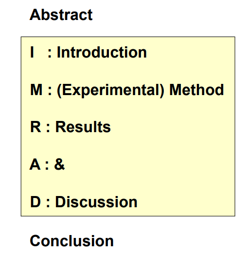

공학논문 작성 팁
공학논문의 정의
공학논문은 독특한 특성을 가진 글이다.
- 증명가능하여야 한다
- 객관성이 있어야 한다.
- 독창적이어야 한다
증명은 실험의 경우 독자가 실험을 해볼 수 있도록 상세히 설명해주어야 하고, 소프트웨어나 알고리즘은 구현이 가능한 수준의 설명이 있어야 한다.
객관성을 지키기 위해서는 추상적인 단어, 예를 들어 매우 많다 라든가, 납득가능한 수치라는 표현은 쓰면 안된다. 좋다 나쁘다 같은것도 객관적인 글읽기를 방해한다.
독착성을 한마디로 정리하면 도둑질 하지 말자.
공학논문의 효과적인 구성
결국 공학논문도 글이고, 독자들이 관심있고 재미있게 읽을 수 있도록 하는 것은 일종의 예의이다. 뉴스를 생각하면 쉽다. 헤드라인이 크게 있고, 그 헤드라인이 재밌으면 세부내용을 읽기 시작하는 것과 같다.
따라서 글의 헤드라인인 제목은 매우 중요하다. 좋은 제목을 짓는 방법은 ... 사실 나도 미숙하므로 책이나 인터넷 의 도움을 얻도록 하자.
좋은 제목을 지었으면 초록Abstract 을 잘 적어야 한다. 초록하면 조금 단어가 어려울 수 있는데, 쉽게 말해 요약본이다. 대부분의 논문이 제목만으로는 전체 내용을 파악하기 힘들기 때문에 일반적으로 초록까지는 읽어본다. 따라서 제목과 초록이 한페이지안에 들어가도록 구성하는 것은 독자의 흥미를 떨어트리지 않는 좋은 방법이다.
이제 내용을 적어야 하는데, 논리적인 전개를 위해서 일반적으로 IRMAD 순서를 사용한다. 
꼭 지켜야 할 규칙은 아니지만, 이상하게 쓰는 것보다는 훨씬 낫다.
각 단계별로 하나씩 추천내용을 설명해보겠다
서론 : 연구배경과 가설
기존의 이론이나 논문을 이용해서 자신이 세운 가설을 전개하게 된다. 기초가 되는 논문과 이론을 밝히고 거기에 자신의 가설을 올리는 식이다. 사실 논문이 아니어도 가능하지만 이 기초이론역시 독자가 원한다면 증명가능하여야 한다. 그래서 일반적으로는 논문과 같은 검증가능한 포맷을 기반으로 선택한다. 여기에 자신의 가설, 기능개선이나 혹은 다른 분야에의 적용과 같은 것을 이어서 설명한다.
(연구)방법/ Method
연구방법은 분야마다 조금씩 다른데 프로그래밍과 관련된 것에서는 주로
결과 / Result
생각할점 / Discussion
결론 / Conclusion
마지막으로 마무리 결론에는 앞의 결과를 간단히 몇줄로 정리하는 과정이다. 앞에서 복잡한 수식과 코드를 사용했다면 여기서는 그것을 평문으로 잘 풀어서 설명해주면 된다.
예를 들어 결과Result 에서
)}score : 0.7 이라고 나왔으면, 결론 Conclusion 에서는 이전 이론 대비 10% 이상 스코어가 향상되었다. 정도면 충분하다.